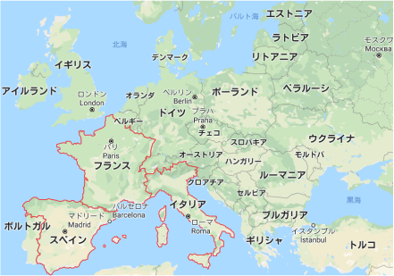

ヨーロッパ地図
ヨーロッパ又は欧州は、地球上の七つの大州の一つ。漢字表記は欧羅巴。
地理的には、ユーラシア大陸北西の半島部を包括し、ウラル山脈およびコーカサス山脈の分水嶺とウラル川・カスピ海・黒海、そして黒海とエーゲ海を繋ぐボスポラス海峡-マルマラ海-ダーダネルス海峡が、アジアと区分される東の境界となる。
イタリア
イタリアは長い地中海の海岸線を持つヨーロッパの国で、西洋の文化や料理に大きな影響を与えています。
首都ローマにはバチカン市国があり、名高い芸術作品や古代遺跡の数々でも知られています。
他の主要都市には、ミケランジェロのダビデ像やブルネレスキのドゥオーモをはじめとしたルネッサンスの傑作で知られるフィレンツェ、運河の街ベネチア、イタリア ファッションの中心地ミラノなどがあります。
フランス
フランスは西ヨーロッパに位置する、中世の都市、アルプスの村々、地中海のビーチを擁する国です。
ワインや洗練された料理でも知られています。
首都パリは、ファッション ブランド、ルーブル美術館をはじめとする名高い美術館やエッフェル塔などのモニュメントで有名です。
ラスコーにある古代洞窟の壁画、リヨンのローマ劇場、パリの壮大なベルサイユ宮殿が、フランスの豊かな歴史を証明しています。
スペイン
スペインはヨーロッパのイベリア半島に位置し、17 の自治州で構成され、多様な地理や文化を有している国です。
首都マドリードには王宮の他、ヨーロッパの巨匠たちの作品を収めるプラド美術館もあります。
セゴビアには中世の城（アルカサル）と保存状態のよいローマ時代の水路橋が残っています。
バルセロナはカタルーニャ州の州都で、サグラダ ファミリア教会をはじめとするアントニ・ガウディの奇想天外なモダニズム建築が有名です。
- 現在の日時
- ここに現在の日時を表示
- 今日の運勢
ここに結果が表示されます
- 現在の位置を表示